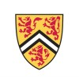
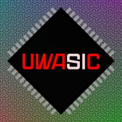
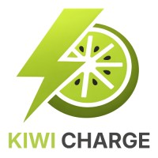

Electrical Engineering @ University of Waterloo
William Park
Currently researching hardware prefetchers for the RISC-V vector extension, developing a RISC-V CPU, and designing a ray-tracing ASIC for Tiny Tapeout.
Projects
Work Experience
-

University of Waterloo
Undergraduate Research Co-op
Researching hardware prefetchers for irregular memory access patterns in RISC-V vectorized workloads. Extending gem5’s simulation infrastructure in C++ to prototype and evaluate experimental prefetcher designs.
-

UWASIC
Digital Team Lead
Leading a team of students to design and fabricate the first programmable ray-tracing ASIC on Tiny Tapeout. Designed system architecture to enable parallel development, creating functional blocks, behavioral specifications, and interface definitions. Profiled ray-tracing kernels to measure arithmetic operation frequency, identifying hardware optimization targets.
-

Kiwi Charge
Electrical Engineering Intern
Built a ROS2-based CAN teleoperation pipeline for a four-wheel differential-drive prototype and designed its electrical schematic (power distribution, motor drivers, CAN, sensor integration). Wrote Python scripts to configure and tune multiple motor drivers in parallel over CAN, cutting setup time by 98%.